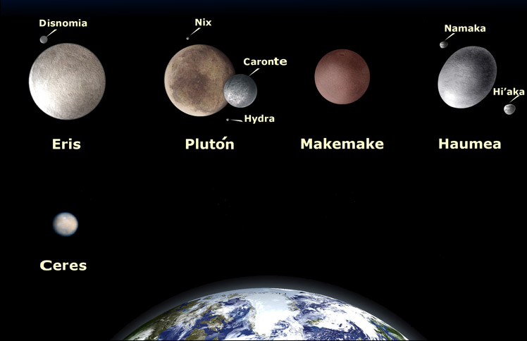

Como hemos dicho al principio, además del Sol y los ocho planetas que forman el Sistema solar, existen otros elementos que también hay que tener en cuenta:
Son pequeños planetas que también orbitan alrededor del Sol y NO son sátelites de ningún otro planeta. En nuestro Sistema Solar existen cinco: Ceres, Eris, Makemake,Haumea y Plutón

Se llama satélite a un cuerpo que gira alrededor de otro que suele ser más grande. Son sólidos y carecen de atmósfera. En el Sistema Solar los planetas poseen satélites, si bien alrededor de la Tierra solo hay un satélite natural: la Luna.
La Luna es un cuerpo celeste rocoso y sin anillos. Los seres humanos la admiramos por su hermosura, por su cercanía y porque brilla en el cielo. La Luna es en realidad un planeta oscuro que no desprende luz, sino que refleja la luz que recibe del sol.
*Se llama Satélites artificiales a los fabricados y lanzados al espacio por los humanos para tomar todo tipo de datos sobre un planeta.
En el Sistema Solar también encontramos asteroides, cometas y meteroides.